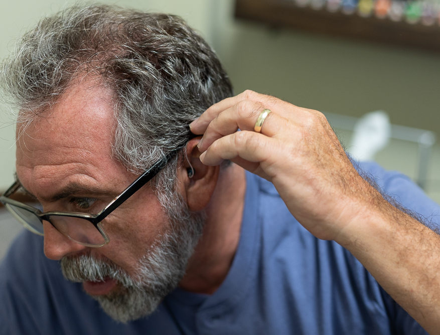

Mixed Hearing Loss Treatment in Rocky Mount, NC
What Is Mixed Hearing Loss?
- First, sound waves enter your outer ear (the visible part) and travel down the ear canal
- The sound hits your eardrum and makes it vibrate
- Those vibrations pass through three tiny bones in your middle ear
- The vibrations then reach the inner ear (called the cochlea), which converts them into electrical signals
- Those signals travel through the hearing nerve to your brain, which interprets them as sound
| Type of Hearing Loss | Where the Problem Is | Key Characteristic |
|---|---|---|
| Conductive hearing loss | Outer or middle ear — sound is not travelling through properly | Often temporary or medically treatable |
| Sensorineural hearing loss | Inner ear or hearing nerve — signals are not processed correctly | Usually permanent but manageable with hearing aids |
| Mixed hearing loss | Both — a problem in the outer/middle ear AND the inner ear at the same time | Requires addressing both components — treatment is more complex but very effective |
A helpful way to think about it
Imagine trying to listen to music with two problems at once: the speakers are damaged (inner ear) AND the volume knob is broken at a low setting (middle ear). Even if you fix the volume knob, the speakers are still not working perfectly. And even with damaged speakers, fixing the volume knob helps. Mixed hearing loss works the same way — treating both components gives you the best outcome.
Symptoms of Mixed Hearing Loss
| Symptom | What It Feels Like in Real Life |
|---|---|
| Difficulty hearing soft sounds | People speak and you genuinely cannot hear them — it is not that you are not paying attention |
| Trouble understanding speech in noise | Restaurants, family gatherings, and meetings are exhausting because voices blend into the background |
| Muffled or distorted sound | Voices sound like someone is talking through a thick wall or with their hand over their mouth |
| Frequently asking people to repeat themselves | You catch some of what was said but miss key words — often the ends of sentences |
| Turning up the TV louder than others prefer | Your family complains about the volume, but it still sounds quiet to you |
| Feeling of fullness or pressure in the ear | A sensation similar to what you feel on an airplane — like your ear needs to pop |
| Tinnitus — ringing, buzzing, or hissing | A constant or intermittent sound that others cannot hear; often worse in quiet environments |
| Your own voice sounds different to you | You may speak more loudly without realizing it, or your voice sounds oddly amplified inside your head |
| Ear pain or discomfort | More common when the conductive component involves an infection or eardrum issue |
When to seek evaluation
If you recognize two or more of these symptoms — particularly if they have lasted more than a few weeks or are getting worse — it is worth getting a proper hearing evaluation. The earlier mixed hearing loss is identified, the more treatment options are available. Waiting typically makes both components harder to address.
What Causes Mixed Hearing Loss?
Why both components are often present together in older adult
Age-related sensorineural hearing loss tends to develop slowly over time. But as we age, we are also more likely to develop middle ear conditions — fluid buildup, earwax, or otosclerosis — that then layer on top of that existing inner ear loss. This is the most common pattern of mixed hearing loss: the inner ear was already showing age-related changes, and then a separate, often treatable middle ear issue developed on top of it.
How Audiologists Identify Mixed Hearing Loss — The Air-Bone Gap
In plain English
If you wear headphones and the sound is still unclear, the problem is in your inner ear or hearing nerve. If bypassing the headphones (using bone conduction) improves things, the problem is also in the outer or middle ear. Mixed hearing loss means you have both problems at once — and the audiogram clearly shows both.
How Is Mixed Hearing Loss Diagnosed?
| Test | What It Checks | Why It Matters for Mixed Hearing Loss |
|---|---|---|
| Pure-tone audiometry | How quietly you can detect tones — via both air and bone conduction | Identifies the air-bone gap that distinguishes mixed from pure sensorineural or conductive loss |
| Tympanometry | How the eardrum responds to small changes in air pressure | Reveals middle ear problems like fluid, eardrum perforation, or stiffness from otosclerosis |
| Speech audiometry | How well you understand spoken words at different volumes | Shows the real-world impact of the hearing loss and helps guide treatment |
| Otoacoustic emissions (OAE) | Whether the tiny hair cells in the inner ear are functioning | Helps separate the inner ear component from middle ear problems |
| Physical ear examination | Visual inspection of the ear canal and eardrum | Can immediately identify earwax buildup, infections, or visible eardrum damage |
| Case history review | Symptom history, noise exposure, medications, family history | Helps identify likely causes of each component — crucial for treatment planning |
Treatment Options for Mixed Hearing Loss
Step 1: Treat the Conductive Component First
| Conductive Cause | Treatment Approach | Is it reversible? |
|---|---|---|
| Earwax blockage | Professional removal by the audiologist — quick and painless | Yes — fully reversible |
| Middle ear infection / fluid | Antibiotics, anti-inflammatory medications, or in some cases ear tubes (tympanostomy) | Usually yes — most resolve completely |
| Perforated eardrum | Small perforations often heal on their own; larger ones may require a surgical patch (tympanoplasty) | Often yes with treatment |
| Otosclerosis | Surgery (stapedectomy) to replace the stiffened bone with a prosthesis, restoring vibration | Yes — surgery is highly effective |
| Cholesteatoma | Surgical removal — cannot be left untreated as it continues to grow | Yes — once removed |
| Structural ear damage | Evaluated individually — surgery may be an option depending on the extent | Varies by case |
Step 2: Manage the Sensorineural Component
An important note about hearing aids and mixed hearing loss
Hearing aids prescribed before treating the conductive component are programmed to the wrong baseline. Once the middle ear issue is resolved, your hearing improves — and hearing aids fitted for the pre-treatment level will be over-amplifying. Always address the conductive component first, then fit hearing aids to your updated results.
Living with Mixed Hearing Loss
- Treating the conductive component often produces a noticeable improvement quite quickly — sometimes within days or weeks, depending on the cause
- Hearing aids typically require a two to four week adjustment period as your brain adapts to hearing sounds it has been missing
- Speech understanding in noisy environments often improves significantly once both components are being managed
- Many people report that their confidence in social situations improves significantly once their hearing is better supported
- Family members who understand what mixed hearing loss is are a valuable support — clear speech, facing you when talking, and not shouting all help enormously
The link between untreated hearing loss and cognitive health
Research has consistently shown that untreated hearing loss is associated with increased risk of cognitive decline, depression, and social isolation over time. This is not inevitable — it is a reason to treat hearing loss early rather than wait. Treating mixed hearing loss, even the component that cannot be fully reversed, significantly reduces this risk by keeping the brain engaged with sound.
Mixed Hearing Loss FAQs
It depends on which component you are asking about. The conductive component — the outer or middle ear problem — is often temporary and treatable. Earwax, infections, and many structural issues can be fully resolved. The sensorineural component — the inner ear damage — is usually permanent. But ‘permanent’ does not mean ‘untreatable.’ Hearing aids and other devices are specifically designed to manage sensorineural hearing loss and restore a great deal of hearing function. Most people with mixed hearing loss experience significant improvement once both components are addressed.
Yes, it can — but not inevitably. The sensorineural component may progress gradually, particularly if it is age-related. The conductive component depends on what is causing it: infections can come back, otosclerosis can progress, and earwax can recur. Regular hearing evaluations allow your audiologist to track any changes and adjust your treatment plan accordingly.
Sensorineural hearing loss affects only the inner ear or hearing nerve — the pathway through the outer and middle ear is working normally. Mixed hearing loss affects both the inner ear AND the outer or middle ear. An audiogram clearly shows the difference: sensorineural loss has no air-bone gap, while mixed hearing loss has an air-bone gap — meaning sound travels worse through the air pathway than through bone conduction.
A hearing aid manages the sensorineural (inner ear) component very effectively. However, it does not fix the conductive component — that needs to be addressed separately through medical treatment or surgery. Always treat the conductive issue first, then fit hearing aids for whatever sensorineural loss remains. Hearing aids fitted before treating the conductive component will need to be reprogrammed afterward.
Yes — mixed hearing loss affects people of all ages. In children, the most common pattern is age-related hearing change combined with a middle ear infection. Children with recurrent ear infections are at particular risk. If your child has frequent ear infections, difficulty following speech, or is falling behind at school, a hearing evaluation is important.
Hearing evaluations are covered by most major insurance plans when medically indicated. The medical or surgical treatment of the conductive component is typically covered as a medical procedure. Hearing aids are generally not covered by standard Medicare Parts A and B, though Medicare Advantage plans and some private insurers offer partial coverage. Contact our office and we can help you understand your benefits.
It is very common for the two ears to have different degrees of hearing loss, and even different types. One ear may have purely sensorineural loss while the other has mixed loss. This is why each ear is always tested separately during an evaluation. Treatment — including hearing aid programming — is tailored to each ear individually.

Get Evaluated for Mixed Hearing Loss
Reviewed by the audiologist at Carolina Audiology
Still have questions? Ask our audiologist!